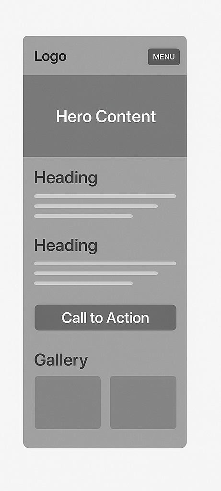
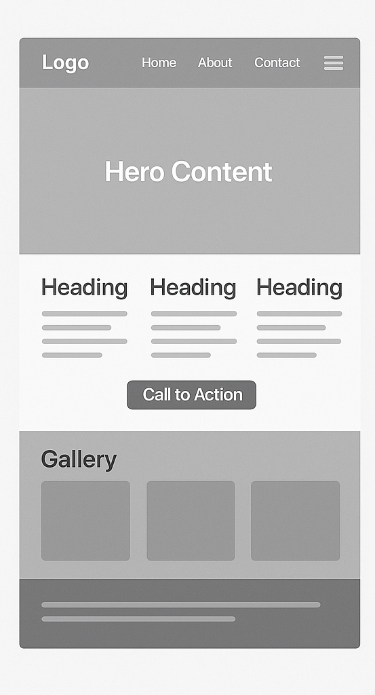

Dubula Football Club
Site plan — community youth football for teenage boys · 2025
Site Scenarios
- Who are the players in the club, and what positions do they play?
- Who are the coaches and what qualifications or experience do they have?
- How has the club been performing in recent matches?
- How can the community help support the club (donations, volunteering, sponsorship)?
- What forthcoming fixtures and programs are planned to help the youth avoid drug abuse?
Color Scheme
The following colors define the brand identity of Dubula FC:
- Primary Green (#0B6E4F) – used for headings, nav bars, and logo.
- Accent Gold (#F2A900) – used for call-to-action buttons and highlight elements.
- Soft Background Green (#E6F2EE) – used for cards and section backgrounds.
- Dark Text (#1B2B28) – used for readable body text.
Typography
The following fonts are used across the website:
- Playfair Display – for main page headings and titles.
- Montserrat – for paragraphs, menus, forms, and general layout text.
Wireframe (PNG)
The following PNGs represent the basic layout for the home page (mobile and desktop views). These are stored in the images/ folder.
Mobile Wireframe
Desktop Wireframe
Site Name & Logo
Dubula Football Club — the official site plan and single-page outline for the club's website identity.
Site Purpose
The site provides a public hub for Dubula Football Club to introduce the club, collect registrations, and accept support.
Wireframe
See comments in CSS and future pages for full wireframe elements. The development pattern for all pages: external CSS file in styles/ and external JS in scripts/ linked with defer in the head.